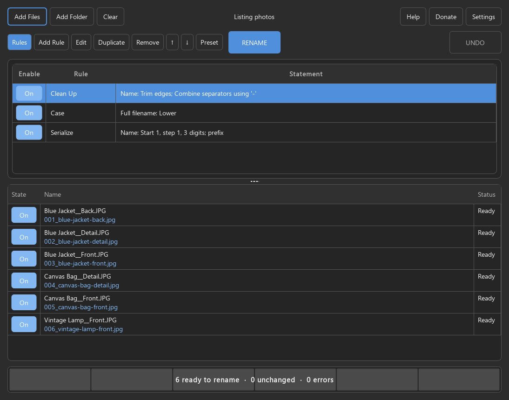

Bring your files
Drop files or folders onto the window. Choose exactly which files to include.
Steady State Studio
A new name. Same file.
Rename a whole batch with a clear preview of every change.
Free, open source, and local to your computer.
Windows & Linux · MIT license

Drop files or folders onto the window. Choose exactly which files to include.
Replace text, change case, add numbers, clean up names, or use regular expressions. Save combinations as presets.
Inspect every new name and resolve conflicts before renaming. Undo the latest batch, even after restarting.
Find setup instructions and the source code on GitHub. Reviewed releases provide a portable Windows ZIP, Linux AppImage, checksums, and matching source archives.
Public release downloads do not require a GitHub account. Packages are unsigned; verify checksums and follow your security policy. Linux requires x86-64, glibc 2.35 or newer, and the desktop libraries listed with the package.
No. File scanning, previews, and renaming happen on your computer. No account or internet connection is needed to use the app. The optional Donate link opens Ko-fi in your browser.
Only filenames change. Files stay in their original folders, and their contents stay intact. Adding a folder collects its files; it does not rename the folder.
Conflicts are shown in the preview. Existing files are never overwritten. The app checks again before applying changes.
The latest batch can be undone, including after restarting the app. Starting another batch replaces that undo history. If files have changed or original names are occupied, the app stops and explains the conflict.